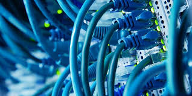

De fysieke laag is de basislaag in een netwerk, waar het gaat om de hardware en de manier waarop data fysiek wordt verstuurd. Denk aan bijvoorbeeld kabels, wifi-signalen en apparatuur zoals routers en switches.
Het draait dus om alles wat te maken heeft met het verzenden van data via fysieke middelen. Dit kan via elektrische signalen, bijvoorbeeld over een koperen kabel of radiogolven bij draadloze communicatie, zoals bluetooth. Je telefoon gebruikt bijvoorbeeld ook wifi (radiogolven) om data te versturen. Zonder de fysieke laag kan er dus geen verbinding zijn.
